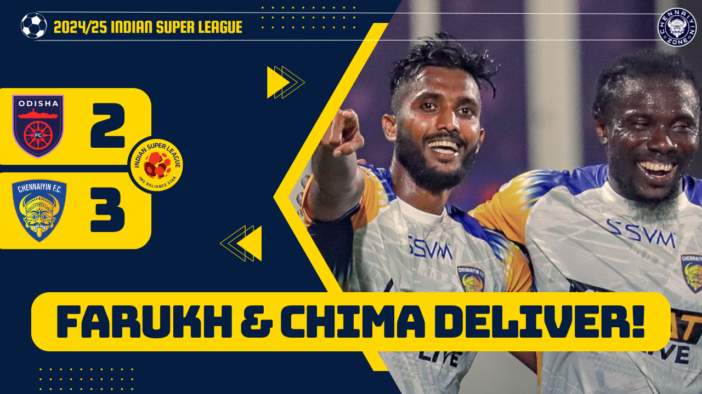

Vettri Vettai: Chennaiyin FC see to get back to winning ways against a Northeast threat
Owen Coyle’s Chennaiyin FC travel to the highlands of Guwahati, to face Northeast United in an exciting encounter. Both the teams haven’t tasted a win since their opening games and will thus be looking
to set things right. Just 1 point separate Chennaiyin FC and reigning Durand Cup winners in Northeast United in the points table.
The last time these two sides met at the Marina Arena, it were the Marina Machans that made a superb comeback to win 2-1 and sensationally qualify for the play-offs, killing Northeast’s hopes in the process.
So there will be a tinge of revenge in the air as Juan Pedro Benali’s boys have a point to prove.
Match Details:
The match takes place on 17th October 2024, at Northeast United’s home ground, Indira Gandhi Athletic Stadium, Guwahati. The kick-off time is 7:30 PM. Live telecast available on Sports 18 TV channels and Jio Cinema (online).
Team Analysis:

Chennaiyin team news:
Owen Coyle is likely to have his full roster available for selection. Injury doubts from previous game - Edwin Vanspaul and Bikash Yumnam featured in the friendly game on October 12, meaning they are gaining back their match fitness. The Gaffer also confirmed that both Farukh Choudhary and Lalrinliana Hnamte are available for selection, after returning from their Indian National Team duties.
Recent form : W, L, D ;
Chennaiyin FC have experienced all possible results in their last three games. After starting on a positive note against Odisha FC, the club has failed to get the three points in the last two games against Mohammedan SC and Hyderabad FC. 3 goals scored and 3 goals conceded so far, and Owen Coyle will look to improve the team in each of the aspects.
Key players:
All eyes will be on the Brazilian playmaker Lukas Brambilla, who’s already shown quality glimpses of his calibre. Expect him to be Chennaiyin FC’s creative outlet upfront. Farukh, who scored for the Indian National Team last week, is the pick among the Indian players. Captain Ryan Edwards has been solid marshalling the defence. And you can hope he does the same and gets us back to back clean sheets (maybe chip in with a goal too!).
Injuries & suspensions:
No suspensions nor official injury concerns remain, apart from probable niggles.
Tactical approach:
Attacking impetus has been the backbone of Chennaiyin FC’s style under Owen, with emphasis on wing-play. Expect the same fluid football to continue. Set-pieces will also be an important part of the game, and could be the difference again.
Team Analysis:

Northeast United team news:
The Highlanders have scored and conceded 7 goals, which is the joint second-highest and second-lowest respectively in the league. Northeast have made their home a fortress, having not lost in the last 6 home games. Apart from Robin Yadav, there are no serious injury concern for Benali’s boys
Recent form : W, L, D, D ;
Much like their counterparts Chennaiyin, luck hasn’t gone in Northeast United’s favour as they’ve not won any of their fixtures, following their season opener victory against Mohammedan. All their last three games have involved them dropping points from winning positions. Pedro Benali will look to steady the ship and seal the three points up next.
Key players:
Alaeddine Ajaraie has set the league on fire so far this season, with 6 Goal contribution in 4 games. In fact 6 out of the 7 goals scored by Northeast has involved the Moroccan marksman! Jithin MS will be the key Indian attacker upfront. Namma Paiyan Mayakkannan has silently yet solidly held up the midfield, alongside his partner Bemammer. Watch out for him too, as he can pose trouble with the long-rangers.
Injuries & suspensions:
Defender Robin Yadav misses out, owing to the red card he received in the last match against FC Goa. Guillermo Fernandez, who was seen limping in the previous game is also likely to be back.
Tactical approach:
Northeast United are deadly in counters, as they have swift ball progressers. They are not expected to hold much of the ball possession. Nestor is the heart of this side, as he dictates the attacking play. Don’t be astounded if they pull up a surprise or two.
Thatha Speaks: Quick bites from the presser:
Owen Coyle and his stalwart Ankit Mukherjee addressed the media on the eve of the fixture. The Scotsman started on a complimentary note on the opposition, but was also wary of their threat saying:

"Northeast are always, I think, very, very dangerous opponents. They were last year and they certainly are this year. I think Juan Pedro Benali has done an amazing job. I think the team has got better this year,
got some very good players. Obviously, the foreign players add to the quality they have, but equally domestic players, you know, the young boys they have got."
"Parthib is outstanding, but I think Jithin has improved enormously in the last year under Juan Pedro. So, they have a number of players that are a real threat. So, we are very respectful, very respectful of the quality of the North East staff, but equally,
we know we have a good team, we know we have good players, we know we can stand toe-to-toe with the best teams in this league when we are at our best."
Owen also expressed gratitude to his counterpart Pedro Benali and the Northeast management for their kind gesture, remarking:
"Five days ago, we had a friendly game against Gokulam Kerala, just a pounds game to get everybody minutes. But since then, we did a recovery day the following day,
but we haven't been able to train the last three days because, obviously, the severe weather in Chennai. And one thing is football, more importantly, we want to make
sure that everybody's safe and well in Chennai. So that's first, that's the priority.
"Then the football becomes secondary because we have to make sure that everybody's well and healthy. But in terms of the football aspect, so I actually want to thank Northeast for allowing us because, obviously, we came a day early because of the flights.
There was a danger that the flights in Chennai would be cancelled today. So in preparation, we came a day early and Juan Pedro and his staff allowed us now to use the facility for training.
So I want to thank them for that. It shows the sporting integrity that Northeast have."
To conclude, Chennaiyin FC’s Head Coach Owen Coyle gave a very important insight into the goalkeeping conundrum at the club, shedding light into Mohammad Nawaz’s situation
"Nawaz was injured all pre-season. So, he wasn't in a position with Samik to fight for that (starting) slot because he was injured. But now he's getting back to health.
He played 90 minutes the other day against Gokulam Kerala, which is important. He did a little minor, just a little, I don't want to call it an operation, a little procedure
to do with his nose during the international break as well."
"But, as I say, he played the 90 minutes. Yes, we hope Nawaz gets back to the levels that we believe he's been before. Because if he does,
then we're going to have a very good goalkeeper on our hands,” said Owen before signing off."
Predicted Lineups:
Northeast United FC: Gurmeet; Dinesh, Asheer, Zabaco, Samte; Bemammer, Mayakkannan; Jithin, Nestor, Thoi; Alaeddine.
Chennaiyin FC: Samik; Dinliana, Dinpuia, Ryan, Ankit; Hnamte, Connor, Lukas, Farukh, Irfan; Chima.
Watch More:
Northeast United FC V/S Chennaiyin FC Preview
Chennaiyin FC V/S Mohammed SC Preview

An Exclusive Chat with Namma Farukh Choudhary on Chennaiyin FC, Owen Coyle and more!
Chennaiyin FC Breaches Kalinga Stadium | Farukh, Chima Scores | Chennaiyin FC 3-2 Odisha FC Review
ISL 2024-25 Chennaiyin FC Season Preview


Chennaiyin FC 4-1 Churchill Brothers FC | Gurkirat Singh GOLAZO! | ISL 2024-25 FIXTURES RELEASED!